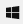

Los caracteres son los diferentes símbolos de comunicación escrita; por ejemplo: letras (como a, b o C), dígitos (como 1, 2 o 5) o signos de puntuación (como %, $ o !). En computación se a cada uno de ellos se les considera un eslabón.
Para formar un texto juntamos caracteres. Si consideramos a un caracter como un eslabón, al juntarlos obtenemos una cadena de texto.
Al tipo de datos que representa texto se le llama string,
que es la traducción al inglés del término cadena
.
En JavaScript los textos se representan con secuencias de caracteres delimitadas por los siguientes símbolos:
' '
El delimitador es el símbolo apóstrofo
(').
En su interior puedes poner cualquier caracter, excepto apóstrofo y salto de línea.
" "
El delimitador es el símbolo comillas
(").
En su interior puedes poner cualquier caracter, excepto comillas y salto de línea.
La codificación de un texto es asignar a cada caracter del texto una combinación de varios 1 y 0. La combinación se puede expresar como un número.
JavaScript usa la codificación UTF-16 de Unicode.
Para agregar un emoji desde Windows solo tienes que presionar la tecla con el logotipo de Windows al mismo tiempo que el punto (+.) y aparece un cuadro de diálogo que te permite seleccionar un emoji.
"Hola pp"`gg-99`'😁¡¡¡¡A sus órdenes jefecita!!!!'
Hay una cadena sin caracteres:
""
o
''
conocida como cadena vacía.
Secuencias de escape.
Propiedades y métodos del tipo
string.